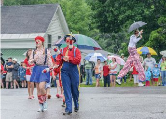

The Big 4th
By: Anita Rafael
“The USS Monitor float was a huge project,” says Paul Rush of the Wardsboro History Group, a nonprofit society that participates in the town’s Independence Day procession. “That was in 2011. I made it out of cardboard and scrap wood I found at the dump,” he recalls. “I left a space all around the rotating gun turret, one inch off the ship’s deck so I could see where I was going, but nobody could see me inside the float.” Paul, who is a gifted artist with a magnificent eye for detail, covered his tan ’98 Ford pickup bumper to bumper, from the top of the cab down to the hubcaps. The ship’s sharp bow stuck out six feet in front of the hood, masking his view of the pavement below it.
“But I was doing fine,” he says, “rolling along smoothly, except Sally Wadsworth of Stratton and her father Warren Patrick were marching in front of me, and Warren kept stopping suddenly to toss candy or to talk to people in the crowd. Whenever I couldn’t see him, I’d jam on the brakes, but by then the front of the Monitor must have been just inches from the back of his head.” Paul shudders to think that the cheerful fellow “probably had no idea this float could have been the end of him, right there on Main Street in front of about 5,000 spectators.” Warren Patrick, five feet four inches tall and dressed as Uncle Sam, was in the parade to celebrate his birthday—just three weeks earlier he turned 100.
It’s inevitable that memories will be made on Independence Day in Wardsboro. Just try to pick a favorite float from the past 65 parades. Who could forget the parade of ’73? That year, the fire department’s ladies auxiliary towed a burning building gushing clouds of black smoke down the street. On the back of the trailer was a hand-painted cardboard sign: “Help Us Get A New Truck.”
The crowd cheered like crazy the time that Fitzpatrick Excavating Company entered the parade with a realistic Jurassic-era landscape on the bed of a 35-foot trailer, the one they usually use to haul heavy equipment. That was 1990. Complete with a gigantic papier-mâché brontosaurus and a pterodactyl nest full of enormous eggs, and the mama pterodactyl, too, the float was inspired by the ’70s TV series “Land of the Lost.” It was brilliant.
Then there was the parade of 1959 when the “Aloha” float caught everyone’s attention. Folks said it’s not that often in Vermont that you get to see women and girls from the town’s most respectable families clad in bikini tops and grass skirts hula their way through the village. Aloha, indeed.
The Fourth of July parade and fair began in 1949 in hopes of generating some extra income for one of the local churches, which later became part of the Wardsboro Yoked Parish. It’s “yoked” because it is comprised of the Wardsboro Methodist church, the West Wardsboro Baptist church, and the South Wardsboro Congregational church. “At first, the three parishes created a mutually beneficial financial umbrella, but services were separate,” says church member and Fourth of July co-chair Mrs. Nancy Perkins. She lives on Main Street, and she is the person you see everywhere on parade day–the lady with the fluttering clipboard full of lists, names and notes, and a courteous, calm demeanor despite the potential for chaos all around her. “Now, as one blended congregation, we worship together in all three buildings,” she explains. “We gather at the Methodist church on Main Street in early winter, we move to the Baptist church on Cross Road from late winter into spring, and then we go to the Congregational church on Cobb Reed Road in summer.” The first two properties have furnaces and electric lighting, and the third has no utilities at all, so the parishioners’ seasonal migration from one corner of town to the next makes sense.

The master of ceremonies for the parade is Peter Carlson of West Townshend, minister of the Wardsboro Yoked Parish for the past 14 years. Better known around town as “Pastor Pete,” he takes the microphone and stands at the top of the stone steps at the Greek Revival-style town hall. Draped in flags, banners and bunting, the crowded portico serves as the official reviewing stand. Pastor Pete, typically wearing khaki cargo shorts, a “USA” t-shirt, and track shoes, keeps up such entertaining patter that it makes you wonder what he’s like in the pulpit on Sunday mornings. He’s quick, he’s funny, he’s charming, he’s corny. He’s inspiring, too, because he is unabashedly filled with patriotic spirit, especially on the Fourth of July. “My job is to tell everyone where the port-a-johns are located,” he says, going deadpan. “I point…over there.”
“About 30 seconds before the parade gets to where I am standing,” he says, “someone hustles over and hands me a list of who’s in it. That’s how I know what to announce. Nobody pre-registers, so right up until it starts, things are entirely fluid.” People just show up that morning with an old tractor, a bicycle built for two, a red-white-and-blue baby buggy, a float, or just themselves, he says, “then we put together a line-up out of whatever we’ve got.” The route is three-tenths of a mile, but the procession makes a round trip, north on Main Street and back again. Spectators can always count on seeing at least 20 vintage cars motor by, everything from a coupé de ville to a ’57 Chevy. There’s a slew of shiny fire trucks, gold-lettered with the names of neighboring towns: Stratton, Winhall, Dover, Newfane, Townshend, Jamaica.
The Bridal Party Joined the Parade
Anyone can join the parade. Pastor Pete likes to tell the story about a wedding he officiated in Townshend, maybe four years ago. It was held early in the morning on the Fourth of July and no sooner had he said “you may kiss the bride” than he was out the door to get to Wardsboro in time to emcee the parade. The bridal party and a number of guests followed Pastor Pete into town, and subsequently took their places among the flag-covered floats and the Model A Fords. The beautiful bride marched in her wedding gown, hand-in-hand with her new husband, while others, who seemed to have had this epic plan in mind before the ceremony, came prepared to change into patriotic costumes.
In the early years, a few townspeople sold handcrafted items on Main Street. “I remember when there were ladies who did what we called ’fancy work.’ They sat at card tables and sold their fine crochet, tatted lace and embroidery,” says Mrs. Perkins, a grandmother of 13 and great-grandmother of nine. “We sold some pies, we set up games for the children, and there were ten-cent pony rides.” Her nostalgia for the “good old days,” when the Fourth was not quite such an extravaganza, is apparent. This year, there will be more than 50 vendors in the street fair from Vermont and several other states.
Everything Seems So Old-Fashioned
All kinds of activities have been added, subtracted and re-added to the day’s schedule of events. Sometimes there is a country auction. Sometimes they set up row after row of white elephant tables and people spend the day treasure hunting. Way back when, there was a baseball game all afternoon where “the singles” played “the marrieds.” In ’53, the log-sawing contest provided some excitement. Then there were times when folks won prizes and a year’s worth of bragging rights for pitching horseshoes. Now, there’s a rubber ducky race down the Wardsboro Brook and those who pick the luckiest ducks win cash. “You never know what we’ll come up with for amusements on the Fourth,” says Mrs. Perkins.
Pastor Pete has some thoughts as to why the celebration in this village has had such lasting appeal among so many people for so many years. “For one thing, the whole scene looks like it’s right out of a Frank Capra movie,” he says. “The day has a timeless quality…it’s happening now, only you feel like it’s happening 75 years ago.” The town has “nearly zero wireless technology,” as he puts it, so even though there are several thousand people milling about, no one bothers checking a cell phone or a Blackberry. He’s noticed that people talk to each other, and even more sociably, they talk to people they don’t even know. Everything seems so old-fashioned–the handmade quilts, the homemade pies, the fresh strawberry shortcakes, the raffle tables–but then again, the architecture of the homes, barns and public buildings that line Main Street, as well as the landscape itself, has not changed much over the last two centuries. Wardsboro– chartered in 1780, population today 900–has authenticity, the kind that has long since vanished all across the nation. Just a short distance past the town park, where the parade makes its U-turn, Main Street becomes an unpaved road.
“Nowadays, you hardly ever see a slice of genuine ’Americana’ as big as this event,” Pastor Pete says.“As soon as the Legionnaires, the preschoolers on tricycles, the Cub Scout packs, and the pairs of dray horses go by, city folks from New York and New Jersey, come up to him and say, ‘This is so real. How on earth did you make it happen like this?’ Everyone who lives in town knows how it happens–it happens because there are many dedicated workers who are residents, relatives of residents, former residents, summer renters, second-homeowners, their houseguests and out-of-town friends of friends. The esprit de corps among the Fourth of July volunteers is contagious.”
Good Souls Who Enjoy Being Useful
About 25 families make up the entire congregation of the Yoked Parish, too few to do what it takes for an event this grand. The army of helpers answers all their prayers. Pastor Pete may never see any of those people sitting in his pews on Sundays, but they are good souls who enjoy being useful on this holiday. Although they don’t say it out loud, they all seem to want to help this little congregation stay active in Wardsboro, and so they lend a hand. Many hands.
“I am the bun man,” says Greg Dean of Wardsboro, a church member who is one of 14 unpaid workers in the burger tent next to the town hall. He transitioned quite a few years ago from helping at the used book sale farther down the street, and now, he says he’s a “trained specialist in buns.”
“We start grilling beef patties at around eight-thirty in the morning, but first we cook up a few pounds of onions so the aroma wafting down Main Street will draw people in our direction,” says Greg, who is a pharmacist in Townshend. The onion ploy works every time. A line forms at the front of the tent a few minutes later, and from then on, nonstop, he buns hundreds of burgers and hot dogs. If you want to know how busy a “bun man” could possibly be, just ask him later on what the parade was like. He doesn’t have a clue because he swears he’s never seen it from his station at the back of the tent. “It’s a sacrifice I am willing to make,” he says, melodramatically placing his right hand over his heart. Setting aside the humor though, Greg says, “This is what makes us a community. It’s been going on for such a long time, I am afraid that if I don’t help every year, and no one else does either, this tradition will vanish, burger tent and all.”
Mrs. Perkins says, “We like it when people come to town early and stay late. A nice, sunny day, but not too hot or not too humid is good.” Almost always, you can bet money on enjoying that kind of weather in the Green Mountains in early July. Last year, for the first time in as long as anyone can remember, it rained that morning–but miraculously, it did not rain on the parade. The storm clouds lifted at ten o’clock, the moment the color guard raised the American flag and fell into step. On both sides of Main Street, everyone smiled at everyone else and people folded up their umbrellas. The rain held off just long enough for the parade to go by. After that, things got soggy, but bent on a having another memorable Fourth of July in Wardsboro village, a crowd gathered under the big tent. They ate barbecued chickens “with all the fixin’s,” and waited for the auction to start.
“The day wasn’t that bad,” says Pastor Pete, glancing heavenward. The preacher surely knows who to talk to about the weather for this year.
Anita Rafael lives and works in Wardsboro. The Fourth of July parade goes right by her house—twice.
This article originally appeared in Stratton Magazine - June 6, 2015